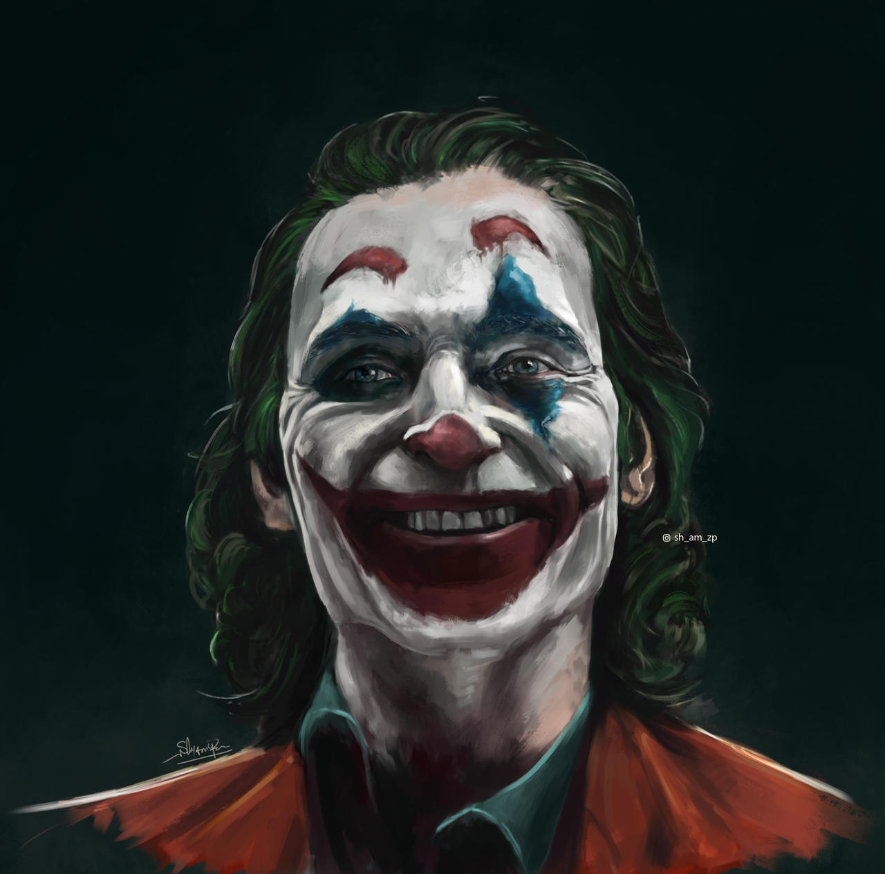
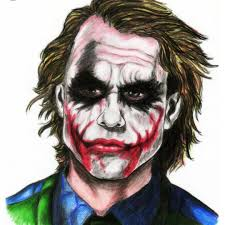

Função de Jocker

You see, their morals, their code... it's a bad joke. Dropped at the first sign of trouble. They're only as good as the world allows them to be. I'll show you — when the chips are down, these... these civilized people, they'll eat each other. See, I'm not a monster. I'm just ahead of the curve.
Definição do Jocker

The Joker is a supervillain from DC Comics, best known as Batman’s archenemy. He is typically portrayed as an insane, chaotic criminal with a clown-like appearance and a twisted sense of humor. Intelligent and unpredictable, the Joker represents anarchy and madness, often challenging Batman’s ideals of justice and order.
Assece o FILME